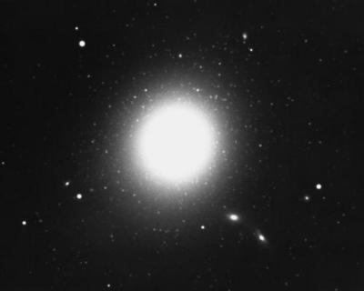

As the name suggests, a brightest cluster galaxy (BCG) is the most luminous galaxy in a galaxy cluster, generally lying very close to the spatial and kinematical centre of the cluster. They are thought to form through the merger of several massive galaxies early in the cluster’s history, with minor mergers expected to account for only a small fraction of the galaxy’s mass.
Although predominantly elliptical in morphology, a large fraction of BCGs have additional faint, extended (up to 1 Mpc) stellar halos. Such galaxies are classified as cD galaxies, where the ‘c’ is a historical reference to the early 20th century supergiant star classification, and the ‘D’ is used to describe bright ellipticals with extensive, amorphous stellar envelopes.
BCGs are the most luminous galaxies in the Universe and also possess a very narrow range of absolute magnitudes (the scatter is less than 0.24 magnitudes in nearby samples). They can therefore be used as standard candles to measure distances on cosmological scales. In addition, while they can be included in distance measurements using the Fundamental Plane of galaxy types galaxies, BCGs are more luminous than predicted by both the Kormendy relation and Faber-Jackson relation, and should not be included for distance measurements with these scaling relations.